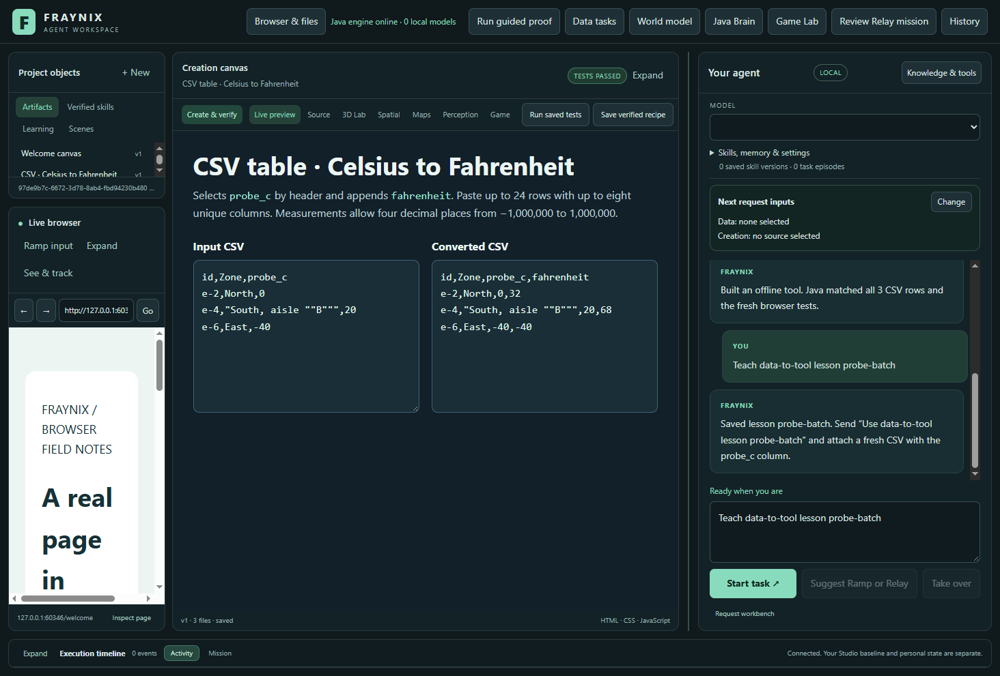
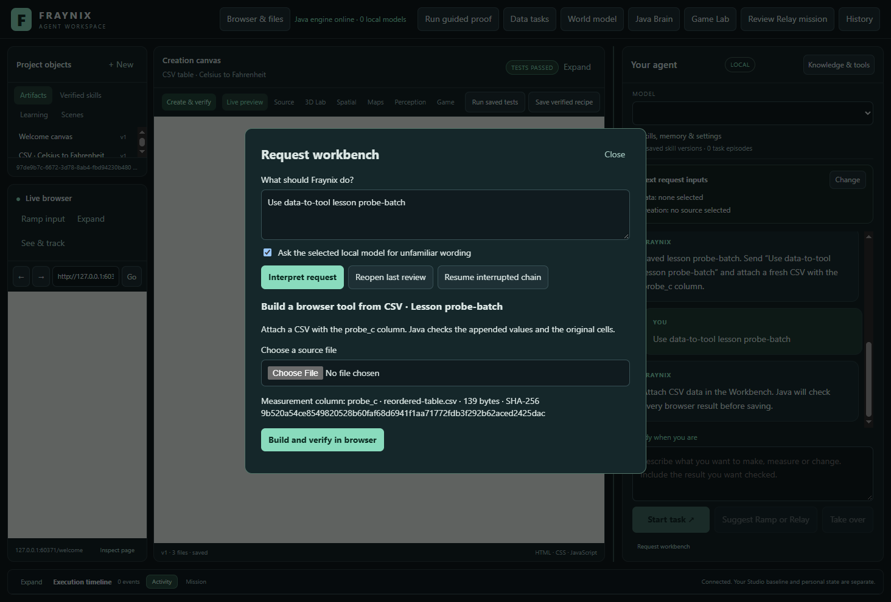
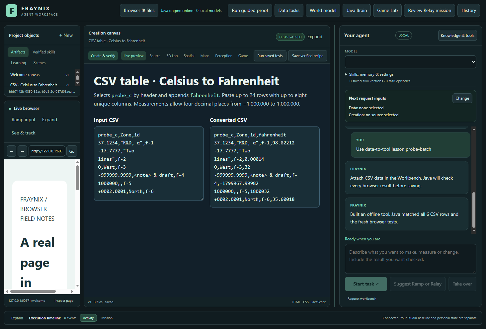

Teach a converter to find a named CSV column
Choose a named measurement column in Chat and teach a conversion from its verified result. Reuse the lesson on reordered CSV and append the checked result without losing the other cells.

Chat saves a lesson for the probe_c column

Workbench shows the selected header for the reordered file

Canvas preserves the existing cells and displays the appended result
System files
Open source